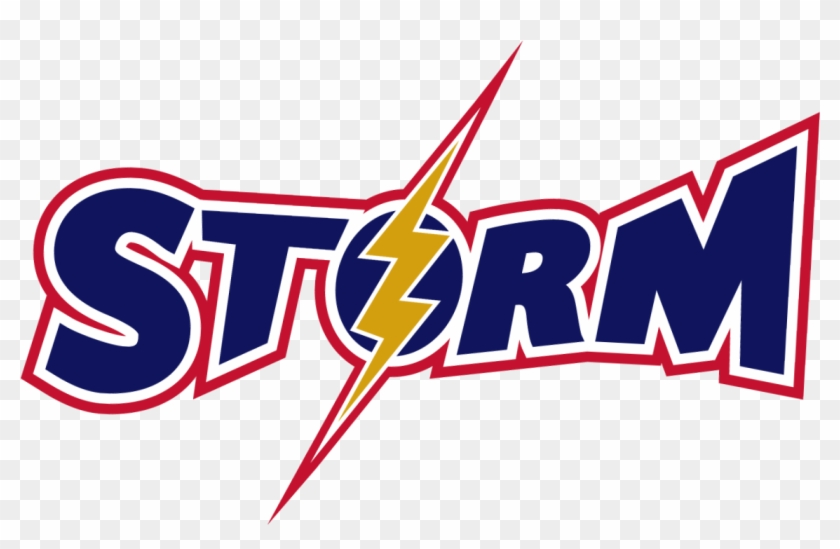

<ion-header *ngIf="title; else logo" class="ion-no-border">
  <ion-toolbar [color]="color">
    <ion-title  >{{ title }}</ion-title>
    <ion-buttons *ngIf="backButton == 'true'" slot="start">
      <ion-button shape="round" size="large" (click)="goBack()"><ion-icon name="arrow-back-outline"></ion-icon></ion-button>
    </ion-buttons>
  </ion-toolbar>
</ion-header>

<ng-template #logo>
  <ion-header class="ion-no-border">
    <ion-toolbar>  
      <ion-buttons class="ion-buttons-logo" slot="start">
        <ion-menu-button></ion-menu-button>
      </ion-buttons>
      <div id="logo">
        
      </div>
    </ion-toolbar>
  </ion-header>
</ng-template>